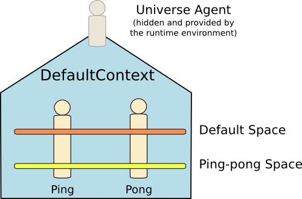

Agent Communication in Sub-Space with the Ping Pong Agents
- 1. Principle of the Application
- 2. Event definition
- 3. Pong agent
- 3.1. First definition
- 3.2. Join the sub-space
- 3.3. Handling the Ping event
- 3.4. Replying to Ping with a Pong
- 3.5. Restricting the scope of the Pong event
- 4. Ping Agent
- 4.1. First definition
- 4.2. Handling the Pong event
- 4.3. Re-sending a Ping when receiving a Pong
- 4.4. Sending the first Ping
- 4.5. Delaying the sending of the first Ping
- 5. Launch the agents
- 6. Legal Notice
This document describes how to create a simple agent-based application in which agents are exchanging basic messages inside a sub-space. Before reading this document, it is recommended reading the General Syntax Reference.
The elements that are explained in this tutorial are:
- the definition of an event;
- the definition of an agent;
- the creation of a sub-space;
- the sending of an event occurrence in the default space;
- the receiving of event occurrences; and
- the definition of a proactive behavior: waiting for partners.
The source code related to this tutorial may be found in the GitHub of the SARL demos.
1. Principle of the Application
The principle of the application is the following:
- The agents are joining a sub-space given at initialization.
- The
PingAgentagent is sending aPingmessage to all agents into the sub-space. - The
PongAgentagent is receiving thePingmessage, and replies with aPongmessage to the sender of thePingmessage. - The
PingAgentagent is receiving aPongmessage and replies to the sender of thePongwith a newPingmessage.
These messages contain an integer number that indicates the number of the event.

2. Event definition
First, the Ping and Pong events must be defined.
2.1. Ping Event
The Ping is an event that contains the index of the event. This index indicates
at which position the event is located in the sequence of sent Ping event.
The index attribute is a value, for making it unmodifiable after its initialization.
For setting the value of the index value, it is mandatory to define a constructor.
2.2. Pong Event
The Pong is an event that contains the index of the Ping event for which the
Pong event is created.
The index attribute is also a value, and it must be set in a constructor.
event Pong {
val index : int
new(i : int) {
this.index = i
}
}
3. Pong agent
The second step of this tutorial is the definition of the agent that is waiting
for Ping events, and replying Ping events.
3.1. First definition
The initial definition of the pong agent is:
agent PongAgent {
}
3.2. Join the sub-space
Because the agents are interacting into a sub-space, they must join this sub-space at start-up.
The sub-space is located in the default context. For creating or joining it, we must use the
getOrCreateSpaceWithSpec function. This function searches for a space, which was
created with the given specification. If there is no space, the space identifier is used
for creating a new space.
After retrieving the instance of the space, it is mandatory to register the agent for
receiving the events. The spaces of type OpenEventSpaceSpecification provides
the register function. It takes the event listener of the agent (provided by
the Behaviors capacity).
agent PongAgent {
uses DefaultContextInteractions, Behaviors
var ^space : OpenEventSpace
on Initialize {
^space = defaultContext.getOrCreateSpaceWithSpec(
typeof(OpenEventSpaceSpecification),
occurrence.parameters.get(0) as UUID)
^space.register(asEventListener())
}
}
3.3. Handling the Ping event
The pong agent needs to handle the Ping events. For that, a "behavior unit" must be defined in the
agent. According to the Agent Reference,
the on keyword followed by the name of the event permits to define a handler of events.
This handler will be invoked by the runtime environment each time the agent is
receiving a Ping event.
agent PongAgent {
uses DefaultContextInteractions, Behaviors
var ^space : OpenEventSpace
on Initialize {
^space = defaultContext.getOrCreateSpaceWithSpec(
typeof(OpenEventSpaceSpecification),
occurrence.parameters.get(0) as UUID)
^space.register(asEventListener())
}
on Ping {
}
}
3.4. Replying to Ping with a Pong
Now, it is time to define how the pong agent is replying with a Ping message.
First, sending an event in the default space must be done with a built-in capacity:
DefaultContextInteractions. This capacity provides a collection of functions that
enable the agent to interact with the default context, and its default space.
For using the capacity, it is recommended declaring it with the uses keyword.
This keyword permits the agent to directly call the functions of the capacity as if
they were defined as actions in the agent.
The DefaultContextInteractions capacity provides the function emit(Event) for
sending an event in the default space of the default context.
The ExternalContextAccess capacity provides the function emit(EventSpace, Event) for
sending an event in the given space.
This latest function is used for sending the events.
The Ping event must be built with an index value as argument. This argument
is the index stored in the Ping event. For accessing the occurrence of the
Ping event, you must use the special keyword occurrence.
In the following example, the Pong event is built with the index argument
stored in the received Ping event.
agent PongAgent {
uses DefaultContextInteractions, ExternalContextAccess, Behaviors
var ^space : OpenEventSpace
on Initialize {
^space = defaultContext.getOrCreateSpaceWithSpec(
typeof(OpenEventSpaceSpecification),
occurrence.parameters.get(0) as UUID)
^space.register(asEventListener())
}
on Ping {
var evt = new Pong( occurrence.index )
^space.emit( evt )
}
}
3.5. Restricting the scope of the Pong event
In the previous code, the event is emitted to all the agents belonging to the default space, including the pong agent.
For restricting the receiver of the Pong event to the initial sender of the
Ping event, you must define a scope for the Pong event.
The DefaultContextInteractions capacity provides the function emit(Event, Scope<Address>)
for sending an event with a specific scope.
The SARL SDK contains the class AddressScope. It is an implementation of a Scope on addresses
(an address is the identifier of an agent in the default space). The creation
of an instance of AddressScope is done with the utility function Scopes.addresses(Address*),
which is getting a collection of addresses for building the matching predicate in the scope.
The SARL SDK contains also the class IdentifierScope. It is another implementation of a Scope on addresses. The creation
of an instance of IdentifierScope is done with the utility function Scopes.identifiers(UUID*),
which is getting a collection of identifiers for building the matching predicate in the scope.
In the following code, we select the first type of scope. It permits to restrict to the initial sender
of the Ping event. Because, the address of the initial sender is known directly, it is easier to
use Scopes.addresses(Address*) than Scopes.identifiers(UUID*)`.
agent PongAgent {
uses DefaultContextInteractions, ExternalContextAccess, Behaviors
var ^space : OpenEventSpace
on Initialize {
^space = defaultContext.getOrCreateSpaceWithSpec(
typeof(OpenEventSpaceSpecification),
occurrence.parameters.get(0) as UUID)
^space.register(asEventListener())
}
on Ping {
var evt = new Pong( occurrence.index )
^space.emit(
evt,
Scopes::addresses( occurrence.source ))
}
}
4. Ping Agent
The third step of this tutorial is the definition of the agent that is sending Ping
events, and waiting for Pong events.
4.1. First definition
The initial definition of the ping agent is:
agent PingAgent {
uses DefaultContextInteractions, Behaviors
var ^space : OpenEventSpace
on Initialize {
^space = defaultContext.getOrCreateSpaceWithSpec(
typeof(OpenEventSpaceSpecification),
occurrence.parameters.get(0) as UUID)
^space.register(asEventListener())
}
}
4.2. Handling the Pong event
The ping agent needs to handle the Pong events. For that, a "behavior unit" must be
defined in the agent.
agent PingAgent {
uses DefaultContextInteractions, Behaviors
var ^space : OpenEventSpace
on Initialize {
^space = defaultContext.getOrCreateSpaceWithSpec(
typeof(OpenEventSpaceSpecification),
occurrence.parameters.get(0) as UUID)
^space.register(asEventListener())
}
on Pong {
}
}
4.3. Re-sending a Ping when receiving a Pong
When the ping agent is receiving a Pong event, it re-sends a
Ping event to the sender of the Pong event.
This new Ping event has an index greater than the one of the
Pong event.
The receiving of the Ping event is restricted to the sender of the
Pong event.
agent PingAgent {
uses DefaultContextInteractions, ExternalContextAccess, Behaviors
var ^space : OpenEventSpace
on Initialize {
^space = defaultContext.getOrCreateSpaceWithSpec(
typeof(OpenEventSpaceSpecification),
occurrence.parameters.get(0) as UUID)
^space.register(asEventListener())
}
on Pong {
var evt = new Ping( occurrence.index + 1 )
^space.emit(evt) [ it == occurrence.source ]
}
}
4.4. Sending the first Ping
For starting the exchanges among the agents, it is mandatory to send a first occurrence
of the Ping event.
This emit is done when the ping agent is started, i.e. when the agent is
receiving the Initialize event.
agent PingAgent {
uses DefaultContextInteractions, ExternalContextAccess, Behaviors
var ^space : OpenEventSpace
on Initialize {
^space = defaultContext.getOrCreateSpaceWithSpec(
typeof(OpenEventSpaceSpecification),
occurrence.parameters.get(0) as UUID)
^space.register(asEventListener())
var evt = new Ping(0)
^space.emit( evt )
}
on Pong {
var evt = new Ping( occurrence.index + 1 )
^space.emit(evt) [ it == occurrence.source ]
}
}
4.5. Delaying the sending of the first Ping
The previous code has a major problem: if there is no pong agent launched
when the ping agent is sending the first Ping event, the application
will reach a deadlock, even if the pong agent is launched later.
For solving this problem, the ping agent must wait for sending the initial
Ping event until the pong agent is belonging to the default space.
The concrete implementation is based on the Schedules capacity, which provides
a collection of functions for creating and launching asynchronous tasks.
In the following code, a task is created with the name waiting_for_partner.
This task is executed every second with the every function (given by the Schedules
capacity). The code between the brackets contains the statements
that will be periodically executed.
In this periodically executed code, the agent is testing if it is the only
one agent belonging to the default space. If not, the agent is sending the initial
Ping event, and stopping the periodic task.
agent PingAgent {
uses DefaultContextInteractions, ExternalContextAccess, Behaviors, Schedules
var ^space : OpenEventSpace
on Initialize {
^space = defaultContext.getOrCreateSpaceWithSpec(
typeof(OpenEventSpaceSpecification),
occurrence.parameters.get(0) as UUID)
^space.register(asEventListener())
val task = task("waiting_for_partner")
task.every(1000) [
if (defaultSpace.participants.size > 1) {
var evt = new Ping(0)
^space.emit( evt )
task.cancel
}
]
}
on Pong {
var evt = new Ping( occurrence.index + 1 )
^space.emit(evt) [ it == occurrence.source ]
}
}
5. Launch the agents
The fourth step of this tutorial is the definition of the launching process. In the rest of this section, we discuss the use of the Janus runtime environment for running the agents. The Janus platform is designed to launch a single agent at start-up. Then, this launched agent must spawn the other agents in the system.
The principle is to launch a single instance of Janus, and run all the agents inside.
Because of the design of the Janus platform, we must define an agent that will launch
the other agents. This agent is named BootAgent. It is defined below.
The boot agent uses the Lifecycle capacity for launching agents in the default context.
This capacity provides the function spawn(Class<? extends Agent>) for launching an
agent of the given type. When the boot agent has launched the two expected agents,
it is killing itself. This is done with the killMe function, which is provided
by the Lifecycle capacity too.
agent BootAgent {
uses Lifecycle
on Initialize {
spawn( PongAgent )
spawn( PingAgent )
killMe
}
}
6. Legal Notice
- Specification: SARL General-purpose Agent-Oriented Programming Language ("Specification")
- Version: 0.7
- Status: Draft Release
- Release: 2017-10-23
Copyright © 2014-2017 the original authors or authors.
Licensed under the Apache License, Version 2.0; you may not use this file except in compliance with the License. You may obtain a copy of the License.
You are free to reproduce the content of this page on copyleft websites such as Wikipedia.
Generated with the translator io.sarl.maven.docs.generator 0.7.0-SNAPSHOT.